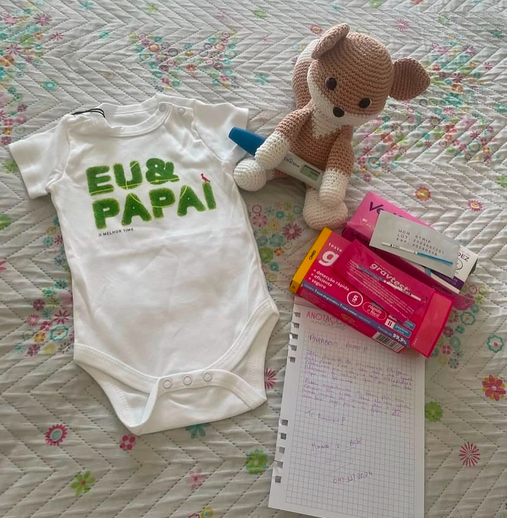
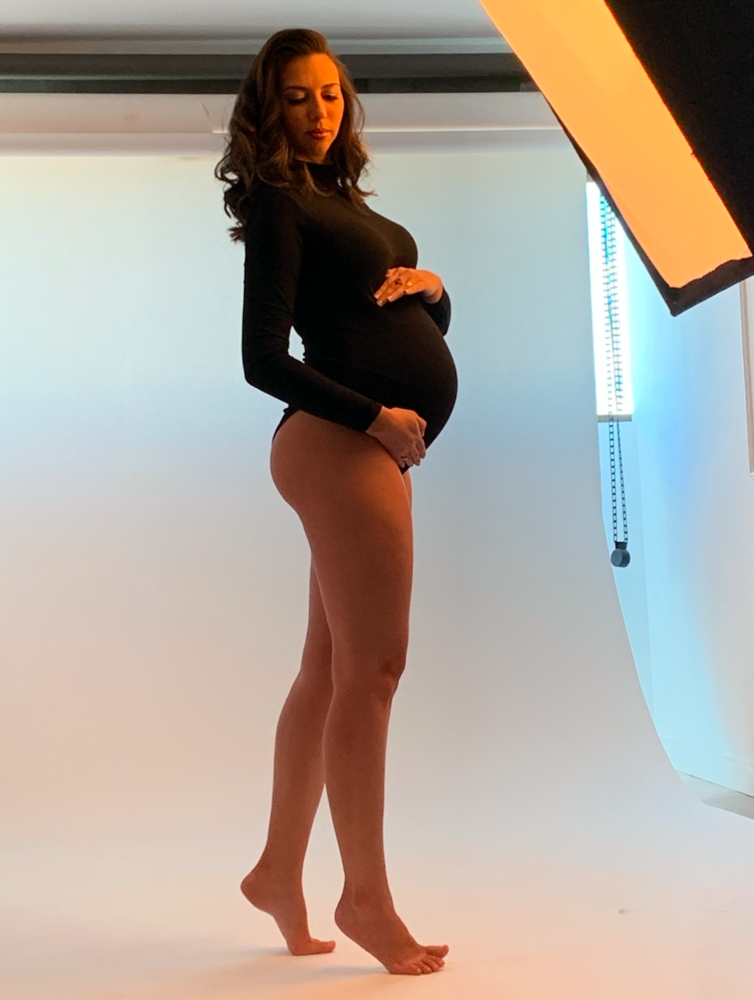
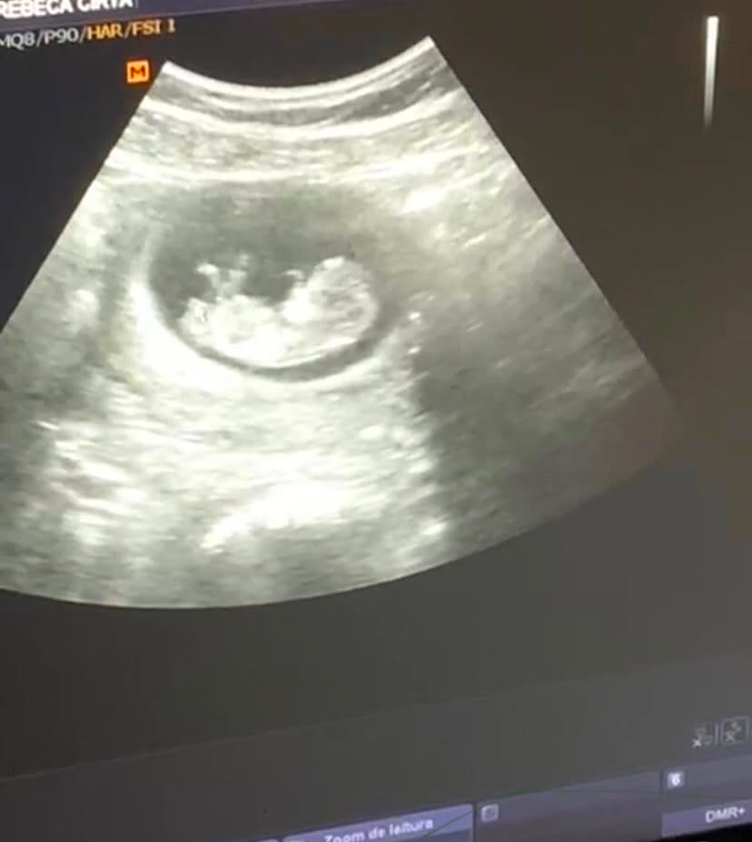
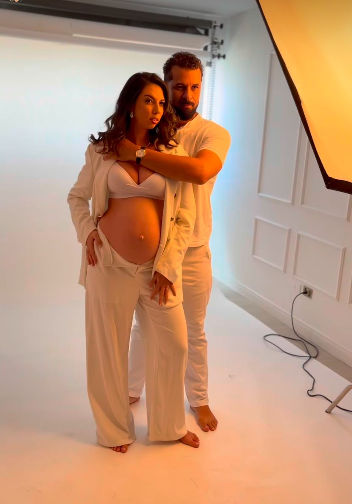

Pedro Ciro
Descobrimos a gravidez!
A descoberta de uma gestação é um momento único, cheio de emoção e intensidade. É como se o tempo parasse por alguns segundos enquanto a ficha vai caindo: um novo coração começa a bater, uma nova vida está se formando, e nada mais será como antes. É comum que uma onda de sentimentos invada o corpo — surpresa, alegria, medo, amor, ansiedade. O coração acelera, os olhos se enchem de lágrimas e um sorriso espontâneo toma conta do rosto. Mesmo que já houvesse expectativa, ver aquele teste positivo transforma tudo em realidade. É o início de uma nova jornada, cheia de sonhos, planos e descobertas. Nesse instante, o mundo parece ganhar novas cores. A mente começa a imaginar o futuro: o rostinho do bebê, os primeiros passos, os abraços apertados. É um momento de conexão profunda, de gratidão e de esperança — como se o amor tivesse ganhado forma dentro do corpo.

Papai
E então, como uma enxurrada, vêm os sentimentos: alegria imensa, orgulho, medo do desconhecido, amor que nasce antes mesmo de ver o seu rostinho. O coração bate mais forte, mais rápido — mas também mais cheio. É como se, de repente, tudo ganhasse um novo propósito. Começa a imaginar a criança correndo pela casa, os momentos juntos, o primeiro “papai” dito com voz suave. Começo a pensar se serei um bom exemplo, se saberei proteger, ensinar, cuidar. É um mix de emoção com responsabilidade. Mas acima de tudo, é um amor bruto e puro, que surge do nada e já é capaz de mover o mundo inteiro. Porque, ali, naquele instante, deixo de ser só eu — e passa a ser pai. E isso muda tudo.

Mamãe
Desde o momento em que descobri que havia uma vida crescendo dentro de mim, tudo mudou. O mundo pareceu parar por um segundo... e então recomeçou, com um novo sentido. Meu corpo passou a ser casa, abrigo, proteção. E meu coração, território de amor infinito. É incrível como algo tão pequeno pode despertar algo tão imenso. Cada batida do seu coração dentro de mim faz o meu coração bater mais forte. Cada ultrassom é como uma janela mágica — uma espiada no nosso futuro. E cada movimento seu é como se dissesse: "Oi, mamãe... tô aqui." Nem todos os dias são fáceis. Tem o cansaço, os desconfortos, as mudanças no corpo, o medo do desconhecido... Mas mesmo nos dias difíceis, a gratidão por te carregar dentro de mim supera tudo. Carregar você é carregar um sonho. É imaginar seu rostinho, sua risada, suas primeiras palavras. É planejar um mundo mais bonito, mais seguro, mais cheio de amor — porque agora você existe nele. Ser mãe já começou no primeiro teste positivo. E mesmo sem te ver, eu já te amo com toda a força que existe em mim. 💗 Você é, desde já, o maior presente da minha vida.!

Nossa Primeira ultrasson
A primeira ultrassonografia é um momento mágico, quase surreal. Quando o som do seu coração ecoa pela sala — rápido, forte, ritmado — é como se o mundo parasse. É o som da vida, da esperança, do amor batendo dentro de um novo ser que ainda está sendo formado. Para os pais, especialmente nesse instante, tudo muda. A gestação deixa de ser só uma ideia ou um sonho... agora tem forma, tem movimento, tem batida. Ver aquele pequeno ser na tela, mesmo que tão frágil e ainda em formação, é uma experiência que toca a alma. Alguns pais choram sem perceber, outros sorriem em silêncio, tentando absorver a grandiosidade daquele instante. Há um sentimento profundo de conexão, um elo invisível que se fortalece entre o bebê e quem o espera com tanto carinho. A primeira ultrassom é a primeira vez em que o amor se torna imagem. É ali que o coração dos pais entende, de verdade, que alguém especial já está a caminho. E isso nunca mais se esquece.
 09.30.42.jpeg.png)
✨ 112 dias de amor crescendo dentro da barriga ✨
o nosso pequeno milagre completa 112 dias no ventre da mamãe. Já são quase 4 meses de gestação — de descobertas, de emoção, de um amor que só cresce a cada batida do coraçãozinho dele. Lá dentro, ele já se estica, chuta, faz caretas e até pode chupar o dedo. É do tamanho de um abacate, mas já ocupa um espaço imenso em nossos corações. Sabemos que ele está se formando perfeitinho — com os dedinhos ganhando impressões digitais, o rostinho tomando forma, e os sentidos despertando aos poucos para o mundo que o espera cá fora. Cada dia é um passo mais perto de te ter nos braços, filho. E enquanto isso não chega, seguimos aqui: sonhando, preparando tudo com carinho e agradecendo a dádiva de sermos seus pais. Falta pouco para te conhecer... mas já te amamos com tudo que somos. 💖

💙 22 semanas e 4 dias... e o amor só cresce! 💙
nosso pequeno milagre completa 22 semanas e 4 dias no ventre da mamãe. Já se passaram mais de cinco meses de espera, de sonhos, de mãos na barriga sentindo cada movimento como se fosse um abraço de dentro pra fora. Agora, ele já mede quase 30 cm e pesa meio quilo de puro amor. Já tem rostinho formado, ouve a nossa voz, se mexe quando colocamos música e responde com chutinhos carinhosos quando sente o toque da nossa mão. Lá dentro, o coraçãozinho bate forte e constante — como se dissesse: “Ei, eu tô aqui... tô crescendo, tô chegando.” A gente já imagina o som da risada, o cheirinho depois do banho, os olhinhos curiosos descobrindo o mundo. A cada dia, o laço entre nós se fortalece, mesmo sem termos nos visto ainda. Filho, você é a parte mais bonita do nosso agora e a esperança mais doce do nosso futuro. Faltam algumas semanas pra te ter nos braços, mas você já vive no nosso coração com todo o espaço que merece. Mamãe e papai te amam mais do que palavras conseguem dizer.

O que sentimos com tudo isso...
A cada semana que passa, percebemos que não somos mais os mesmos. Algo dentro de nós — além do bebê — também está crescendo: é o amor, o cuidado, a responsabilidade e o sentimento de construção de uma nova vida, não só no ventre, mas no nosso coração, no nosso lar. Vivemos dias de ansiedade misturada com alegria, de medo entrelaçado com coragem, de dúvidas cercadas de fé. São muitas emoções, todas novas, todas intensas, todas verdadeiras. Tem noites em que conversamos baixinho com a barriga, e outras em que ficamos só em silêncio, ouvindo os batimentos no ultrassom ainda ecoando em nossa memória. Tem lágrimas que escorrem sem aviso, sorrisos que surgem só de imaginar o rostinho dele(a), planos que tomam forma com cada chute. Essa jornada não é só sobre gerar um filho, é sobre nos tornarmos pais — parceiros de vida e agora parceiros na criação de um amor que jamais terá fim. Seremos três. Mas desde já, somos um só coração. ❤️